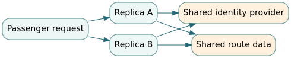

4. Software trustworthiness, observability and resilience
Graduate engineering sequence · Software-Intensive Systems · Northstar multi-agency service
Prerequisites: Chapter 3, security threat modeling, failure analysis, statistics, deployment architecture. Course connections: Software Systems Engineering, Digital and Mission Engineering, Systems Test and Evaluation.
4.1 Reliability and security are architectural properties
Northstar needs to remain useful when components fail and remain trustworthy when messages are malicious, delayed or misleading. A component that responds quickly to an unauthorized command is not dependable, and one that checks every permission but indefinitely blocks legitimate users is not mission-effective. Security, availability, safety, and resilience share architectural mechanisms but are not identical goals. An engineering assessment must state the protected assets, credible threats, service obligations, acceptable degraded behavior, and the loss created by unavailable service.
Start with a trust boundary: the public passenger application may request a trip, but it must not create route permissions. An authenticated agency route authority can publish corridor restrictions, but a valid agency signature does not guarantee data freshness or correct scope. A dispatcher may approve an exception, but only through a specific audited process. The interface contract must cover identity, authorization, freshness, provenance, integrity, replay protection, and an explicit denied-by-default case. Recording 'JWT verified' in a test log proves only one local step of that contract.
NIST SP 800-160 treats trustworthiness as an engineering concern across the system lifecycle, not as a late penetration test. A useful consequence for Northstar is that trust controls and resilience mechanisms must be traceable to mission losses and tested under faulted operation, including dependency failure and recovery.
4.2 Dependency graphs and availability arithmetic
A serial service path requires several subsystems. Under independent stationary availability assumptions, the probability the path is available is the product of component availabilities:
$$ A_{serial}=\prod_{i=1}^{n} A_i. $$
If the booking API, authorization service, and route database each have 99.5% availability and are independent, end-to-end path availability is $0.995^3\approx0.9851$ or 98.51%. Adding more high-availability components can reduce serial-path availability; reducing dependencies in the critical path is sometimes more valuable than improving each component a little.
For two independent parallel instances each at 0.98 availability, $A_{parallel}=1-(1-0.98)^2=0.9996$. But this attractive number ignores shared dependencies and common-cause events. If a region-wide outage occurs with probability $q=0.01$ and defeats both instances, while the independent local availability is 0.98 conditional on no regional outage, then
$$ A=(1-q)\left[1-(1-0.98)^2\right]=0.99(0.9996)=0.989604. $$
The two replicas offer much less end-to-end benefit than independence-based calculations predict. The model assumes the common outage defeats both and is independent of the local failure events; a more realistic analysis may need fault trees, repair models, and correlated failure statistics. Shared identity providers, network routes, certificates, software defects, cloud control planes, and operator procedures can all create common cause.

4.3 Mean time to repair is not the full recovery story
For a repairable component with constant failure rate $\lambda$ and constant repair rate $\mu$, an ideal two-state continuous-time Markov model gives steady-state availability $A=\mu/(\lambda+\mu)$. Expressed in times, this becomes $MTBF/(MTBF+MTTR)$ under assumptions including exponentially distributed operating and repair periods. Recovery is not instantaneous after restoring a process: data consistency, replay handling, backlog draining, operator reauthorization, and cache invalidation may consume additional time. Distinguish service restored, mission restored, and evidence of safe restoration.
Suppose a database is restarted in five minutes, but its event stream requires 20 minutes to reconcile and operators take 10 more minutes to validate route permissions. Announcing an MTTR of five minutes can conceal a 35-minute period of degraded mission function. Set distinct metrics for detection, isolation, restore, reconcile and verify.
4.4 Observability is an evidence pipeline
Logs, metrics and traces are not proof of correctness merely because they exist. Instrument each important state transition with stable identifiers and a configuration revision. A distributed trace should connect an incoming reservation to authorization, capacity allocation, route issue, vehicle acknowledgement and final passenger outcome. A metric such as p95 response time is not meaningful until the population and handling of failures are specified.
An error budget converts an availability SLO into an operational allowance. For an SLO of 99.9% successful eligible requests during a 30-day window, up to 0.1% may fail under the definition. If there are 1,000,000 eligible requests, that is 1,000 failures. This is not permission to violate a safety constraint, nor is it necessarily an appropriate metric for rare emergency operations. When a component handles safety-critical permissions, track hazardous actions as a separate constrained outcome rather than burying them in aggregate success rates.
A robust incident record preserves causal hypotheses and counterevidence. If route updates were delayed, capture network latency, upstream revision, receiving cache version, operator interventions and actual passenger outcomes. Without provenance, a telemetry dashboard can create confidence while preventing independent reconstruction of the event.
4.5 Threat modeling and fault injection must meet
A threat is not simply a failure with malicious intent. Attackers can choose timing and targets based on observed controls. Consider a validly signed old authorization replayed after corridor closure. A signature check passes. A freshness and monotonic-revision check should reject it. Inject this case at the downstream consumer, not only at the issuing service, because the receiver determines whether a stale authorization has an effect. Other useful test cases include token reuse with changed scope, expired key rollover, partial loss of audit storage, overload during authentication-service outage and recovery with delayed messages.
Recovery mechanisms themselves create attack surfaces. If emergency fallback bypasses normal authorization, its activation criteria, duration, logging, dual control and rollback need independent evaluation. The system should not make a dangerous exception permanently available because it was designed for exceptional conditions.
4.6 Engineering decisions under competing objectives
Fail-open and fail-closed are not universal answers. Rejecting all requests during an agency outage may reduce unauthorized routes but harm evacuation access. Accepting cached permissions may preserve access but increase hazard exposure. One design could allow noncritical information requests while suspending departures, use a narrowly scoped local approved corridor, and require an independent operator confirmation. Its evidence requirements include route freshness, operator workload, recovery time and equitable passenger impact.
Form a bounded assurance case: identify what safety and security constraints remain enforced in each mode, the specified recovery envelope, the independence of redundant paths, the evidence supporting transition criteria, and the circumstances that force a stop. Explicitly state that an educational simulator cannot validate operational reliability or threat resistance.
Problems — solve first
- Three independent serial components each have availability 0.99. Compute path availability; state why multiplying may be invalid.
- Two independent instances each have availability 0.98, but a common outage with probability 0.02 defeats both. Compute adjusted availability and compare with naive parallel availability.
- A service has 300,000 eligible monthly requests and a 99.95% success SLO. How many failures exhaust the nominal budget? Why should safety failures be counted separately?
- A recovered route cache reports 'healthy' but still contains an earlier signed permission. Describe three evidence artifacts needed to justify actual mission recovery.
Worked solutions
- $0.99^3=0.970299$ or 97.03%; shared infrastructure and dependent outages invalidate simple multiplication.
- Parallel-only result $1-0.02^2=0.9996$; common-cause-adjusted result $0.98(0.9996)=0.979608$, or 97.96%.
- $300000(0.0005)=150$ failures. A single high-consequence unsafe departure could be unacceptable even if the aggregate success SLO is satisfied.
- Revision-specific reconciliation report, downstream freshness/fencing checks with captured configured test results, and operator acceptance or independent authority confirmation. Include timing and negative tests.
Practicum and reference
Run the fault-and-recovery laboratory · Reliability simulation code · Notebook.
Reading: NIST SP 800-160 Vol. 1 Rev. 1 and NIST SP 800-218 SSDF. These support system trustworthiness and secure development practices; the specific availability arithmetic here is a simplified teaching model.
Inspect the computational model
This code is a simplified learning model, not production software. Read the assumptions before using its output.
Show Python model for this chapter
def serial_availability(*components: float) -> float:
result=1.0
for a in components:
if not 0<=a<=1: raise ValueError('availability out of range')
result*=a
return result
def parallel_common_cause(local_availability: float, common_outage: float, replicas: int=2) -> float:
if not 0<=local_availability<=1 or not 0<=common_outage<=1 or replicas<1:
raise ValueError('invalid availability inputs')
return (1-common_outage)*(1-(1-local_availability)**replicas)
def error_budget(eligible:int, target:float) -> float:
if eligible<0 or not 0<=target<=1: raise ValueError('invalid SLO')
return eligible*(1-target)Download complete Python source · Download automated tests · Download executable notebook